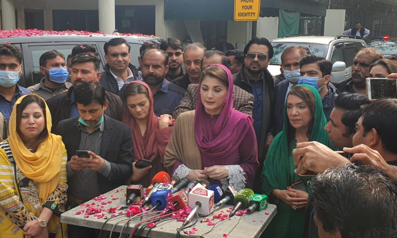
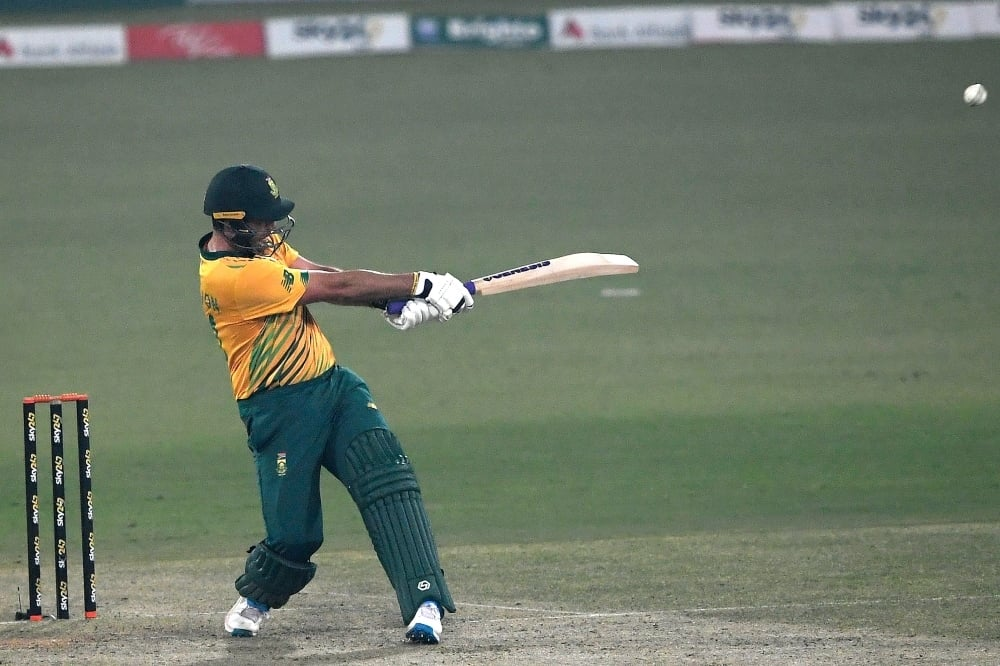
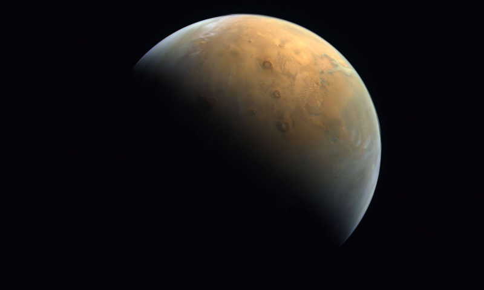

Asking Justice Isa to not hear cases on PM bad for 'credibility' of judiciary: Maryam
Says "the whole system of justice and the respect of the judiciary is being risked to save an unqualified and incompetent person".
'Fired a little tear gas on govt employees to test it', Rashid makes light of action against employees in capital

Days after police in Islamabad fired tear gas on protesting government employees, Interior Minister Sheikh Rashid Ahmed on Sunday made light of the incident, saying it was "necessary to test the tear gas as it had been unused for a long time".
Addressing a ceremony in Rawalpindi, he said that the capital's police "fired a little tear gas", adding that it was necessary to test it since the tear gas canisters had been unused for a long time. "Only a little was tested, not a lot," he claimed.
'Shocking' that CJP order released to media before it was sent to me: Justice Isa

Two days after Chief Justice of Pakistan Gulzar Ahmed dismissed a case concerning allegations that the premier had distributed development funds among lawmakers, observing in the written order that Justice Qazi Faez Isa should not hear cases involving the premier, a letter from Justice Isa — who was part of the bench — to the apex court registrar expressed 'shock' that the judgement was released to the media before it was sent to him, it emerged on Saturday.
PTI replaces Qadir with Agha for Senate seat after protest

QUETTA: The Pakistan Tehreek-i-Insaf central parliamentary board, headed by Prime Minister Imran Khan, has withdrawn the party ticket awarded to business tycoon Abdul Qadir in Balochistan for the Senate election after strong opposition from the PTI provincial leadership and zonal heads.
The party high command decided to take back ticket from Abdul Qadir and nominated Zahoor Agha for the Senate election on a general seat, said Adviser to the Prime Minister Shahbaz Gill on Saturday. “Withdrawal of party ticket from Abdul Qadir is correct,” the adviser said, explaining that Mr Agha would be party candidate from Balochistan in the Senate election. Opposing the award of party ticket to Abdul Qadir, PTI’s provincial leadership argued that he did not belong to the PTI as he had been a member of the ruling Balochistan Awami Party (BAP) till last week. The party provincial spokesman Asif Tareen also confirmed to Dawn that Zahoor Agha would contest the Senate election on general seat from Balochistan as the party withdrew its ticket from Mr Qadir.
Five-wicket Pretorius helps South Africa level Twenty20 series
Fast bowler Dwaine Pretorius recorded the best figures for South Africa in the shortest format to help his team beat Pakistan by six wickets in the second Twenty20 international in Lahore on Saturday. The 31-year-old grabbed 5-17 to keep Pakistan down to 144-7 in 20 overs before Pite van Biljon (42) and Reeza Hendricks (42) took South Africa past the modest target in 16.2 overs.
UAE's 'Hope' probe sends home first image of Mars
A handout picture provided on Feb 14, 2021 by the United Arab Emirates Space Agency taken by the Emirates eXploration Imager after Mars Orbit Insertion on board the First Emirates Mars Mission from an altitude of 24,700 km above the Martian surface shows the Olympus Mons, the highest volcano on Mars, and the Tharsis Montes, three volcanoes named Ascraeus Mons, Pavonis Mons and Arsia Mons. — Photo via AFP.
The UAE's “Hope” probe sent back its first image of Mars, the national space agency said on Sunday, days after the spacecraft successfully entered the Red Planet's orbit.
The picture “captured the largest volcano in the solar system, Olympus Mons, emerging into the early morning sunlight,” it said in a statement. The image was taken from an altitude of 24,700 kilometres above the Martian surface on Wednesday, a day after the probe entered Mars' orbit, it said in a statement. Sheikh Mohammed bin Rashid Al-Maktoum, UAE prime minister and Dubai's ruler, shared the coloured image on Twitter.
Two white tiger cubs likely died of Covid-19, Lahore Zoo officials say
The cubs died in the Lahore Zoo on Jan 30, four days after beginning treatment for what officials thought was feline panleukopenia virus. — AFP
Two 11-week-old white tiger cubs that died at Lahore Zoo last month appear to have died of Covid-19, officials said.
The cubs died in the zoo on Jan 30, four days after beginning treatment for what officials thought was feline panleukopenia virus, a disease that zoo officials said is common in Pakistan and targets cats' immune system. But an autopsy found the cubs' lungs were badly damaged and they were suffering from severe infection, with pathologists concluding they died from Covid-19. Although no PCR test for the novel coronavirus was conducted, zoo deputy director Kiran Saleem told Reuters the zoo believes the cubs were the victims of the pandemic that has killed 12,276 people in Pakistan.